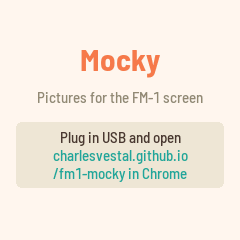
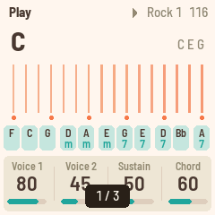

Mocky
Pictures on the FM-1's screen, sent from your browser. Drop a screen mockup on the page and it's on the FM-1 a moment later, exactly as the screen will show it: check the colours, the sizes, and how the text reads at arm's length, on the real thing.



Sending
| Any size | Pictures are scaled to the screen's 240 × 240: Fit (with a colour behind), Fill (cropped), Stretch, or 1:1. A picture made at 240 × 240 arrives pixel for pixel. |
|---|---|
| True colours | The page shows what the screen will show (the screen's 16-bit colour). Dither for photos and gradients, if you like. |
| Keep | Kept pictures stay on the FM-1 when it's switched off: 276 KB of room, up to 64 pictures. A flat mockup takes a few KB, a photo about 116 KB. |
| Several | Drop several pictures at once and they're sent in order: a whole flow, ready to step through. |
| Watch a file | Pick a file and the page sends it again each time it changes. Export from your design tool over the same file and the FM-1 follows. |
On the FM-1
| White keys | Pictures 1–16. Their lights show which are kept; the one on the screen blinks. |
|---|---|
| OCT− · OCT+ | Previous, next. SELECT, ALGORITHM, PRESETS and KNOB 1–3 step too. |
| PLAY | Slideshow on and off. KNOB 4 sets the pace, 1 to 30 seconds a picture. |
| SAVE | Keeps a picture sent without "Keep" (SAVE blinks while there is one). |
| HOME | Which picture this is, and how much room is left. |
Mocky starts on the picture you looked at last.
Screen reader
Mocky works with the FM-1 Screen Reader. A picture can't be put into words, but Mocky tells the reader everything else it shows: which picture is on the screen ("picture 3 of 7"), a new picture arriving and whether it was kept, the slideshow, the room left, and what each button did. Open the reader in Chrome with the FM-1 plugged in; it speaks with its own voice, or hands the text to your computer's screen reader.
To go back to the official firmware, use the installer's "Back to the stock firmware", or M-VAVE's updater, M-UPGRADE, from m-vave.com/download. M-VAVE and FM-1 are trademarks of their owners. Mocky is not affiliated with them.